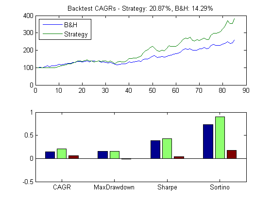
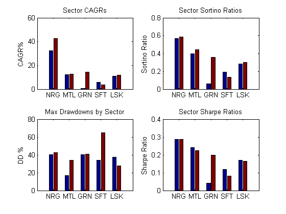

Commodities Trading with MATLAB - Catch-up strategy across sectors
Once a trading strategy has been identified and refined by the analyst, the next steps in the workflow involve backtesting the strategy and generating multiple analytics to capture different aspects of the strategy.
In this script, we backtest a refined version of our momentum catch-up strategy. This version picks one commodity from each of the five groups we have previously identified - energy, metal, livestock, grains and softs - on an equally-weighted basis and trades it on an equally-weighted monthly basis. After computing the performance of the strategy, the script generates overall statistics for the strategy while drilling down into how each of the groups performed.
Contents
1. Setup
Load the cleaned, aligned data that was retrieved using the Demo_A script.
clc;clear;
load('StageA');
cmd = CommodityMetadata;
2. Set up constant parameters
In this section, we set up the parameters for our strategy. We define a lookback window in months, the indicator that we are going to use, the number of commodities that we will pick from each group, the number of months to skip before trading the "catch-up" commodity, and finally we take into account transaction costs.
params = struct;
params.LookbackWindow=6;
params.Indicator=@IndicatorSMADiff;
params.HowMany=1;
params.SkipPeriod=2;
params.TxnCost=20/10000;
frequency='m';
3. Loop through commodity sectors, generate stats
This section computes the strategy performance on an equally-weighted basis, by iterating through each defined commodity group and calling a custom function that picks a "catch-up" candidate every month and trades it. We use the function outputs to construct statistics (CAGR, Sharpe ratio, Sortino ratio, maximum drawdown) for every group on a strategy basis and buy and hold basis.
cagrSet=[];sortinoSet=[];sharpeSet=[];drawdownSet=[]; rtnSet=[];bahSet=[]; for i=1:(length(CommodityTypes)-1) container = TrainingSetMonthly; container = FilterByType(container,CommodityTypes{i}); params.DataContainer = container; params.ContractMonth = 1; [sectorRtn, bahRtn] = ComputeCrossSectionalMomentum(params); rtnSet = [rtnSet sectorRtn]; bahSet = [bahSet bahRtn]; GetAllStatistics; end
4. Plot B&H performance with strategy performance
This section plots the performance of the multi-sector cross-sectional momentum strategy, and compares it with a buy and hold strategy.
[bahStats, bahIndex, labels] = ComputeStatistics(mean(bahSet,2),'m'); [stratStats, stratIndex, ~] = ComputeStatistics(mean(rtnSet,2),'m'); comp = [flipud(struct2array(bahStats)') ... flipud(struct2array(stratStats)')]; comp = [comp comp(:,2)-comp(:,1)]; figure; h=subplot(2,1,1); plot(bahIndex,'DisplayName','B&H');hold all; plot(stratIndex,'DisplayName','Strategy'); legend('toggle'); legend('Location','NorthWest'); title(sprintf('Backtest CAGRs - Strategy: %3.2f%%, B&H: %3.2f%%', ... cagr(stratIndex,12)*100,cagr(bahIndex,12)*100)); hold off; h=subplot(2,1,2,'XTickLabel',labels,'XTick',1:length(labels)); box(h,'on'); hold(h,'all'); bar(comp,'Parent',h);
5. Generate relative performance plots
This section generates plots to compare the relative performance of each sector on multiple analytics - CAGR, Sortino ratio, Sharpe ratio, and maximum drawdown.
figure; cmdTypes=CmdTypesShort; h=subplot(2,2,1); % CAGR PlotPerf(h,cmdTypes,cagrSet*100,'CAGR%','Sector CAGRs'); h=subplot(2,2,2); % Sortino PlotPerf(h,cmdTypes,sortinoSet,'Sortino Ratio',... 'Sector Sortino Ratios'); h=subplot(2,2,3); % Drawdowns PlotPerf(h,cmdTypes,drawdownSet*100,'DD %',... 'Max Drawdowns by Sector'); h=subplot(2,2,4); % Sharpe PlotPerf(h,cmdTypes,sharpeSet,'Sharpe Ratio',... 'Sector Sharpe Ratios'); hold off;